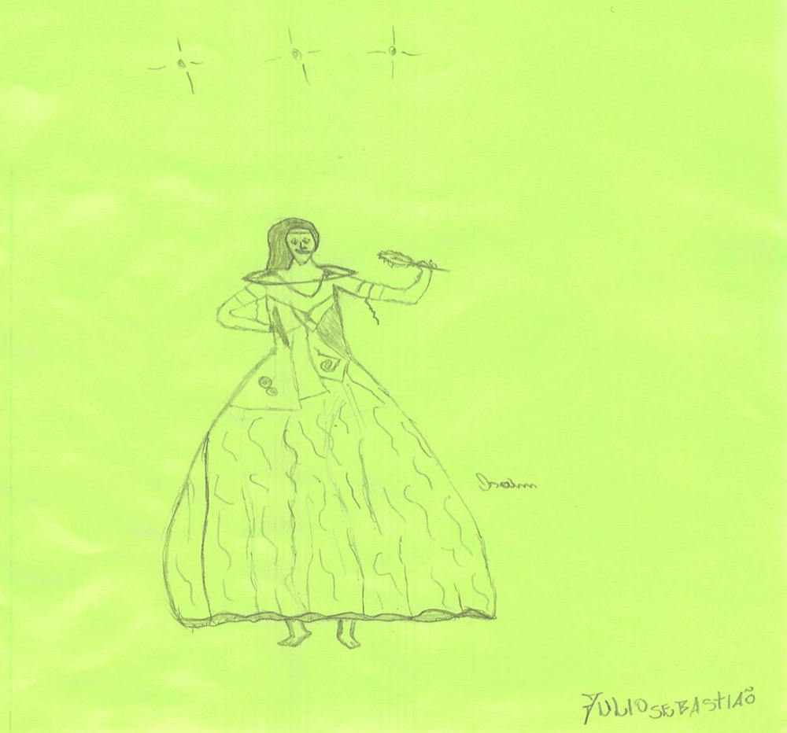
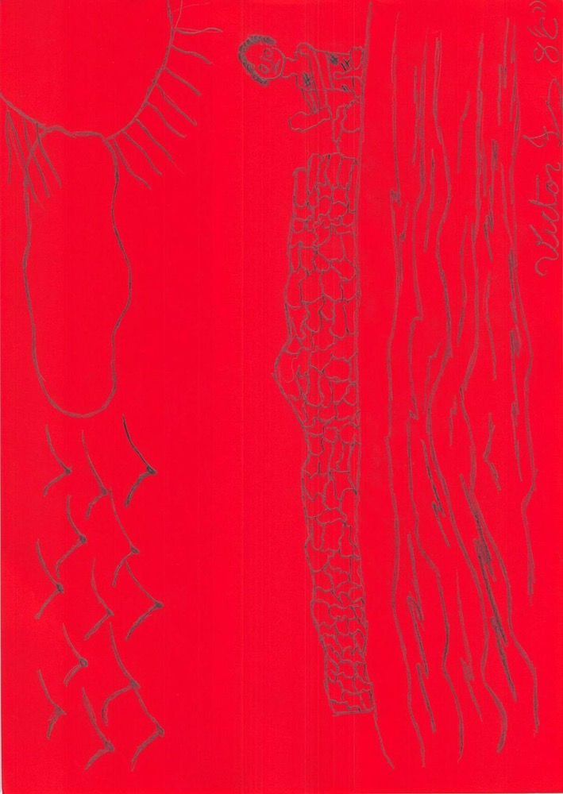
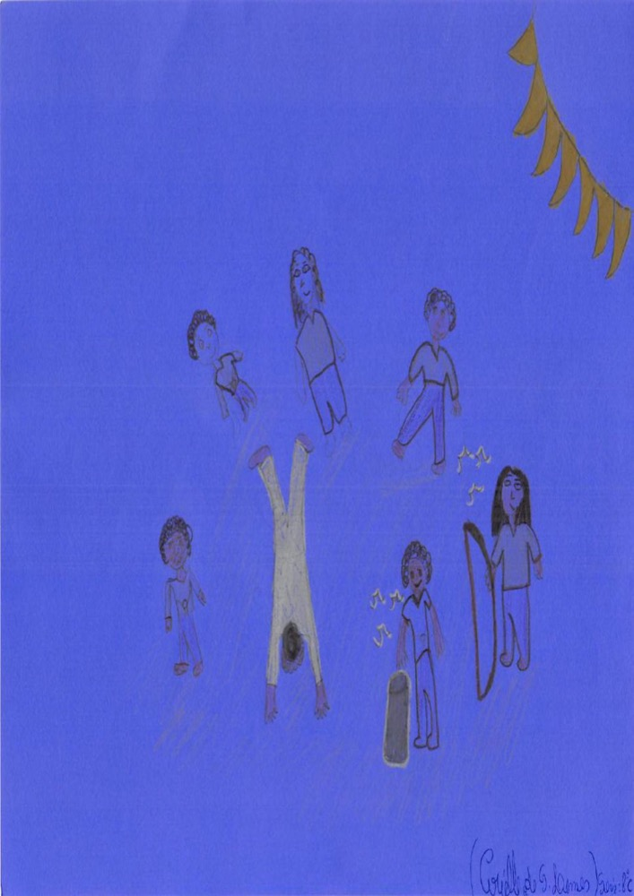
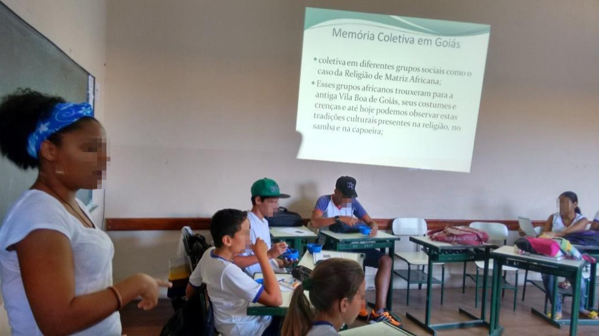
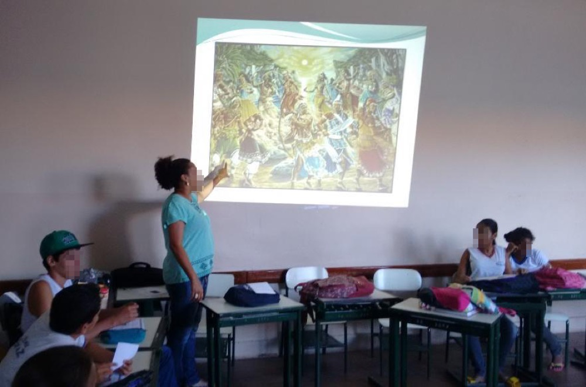
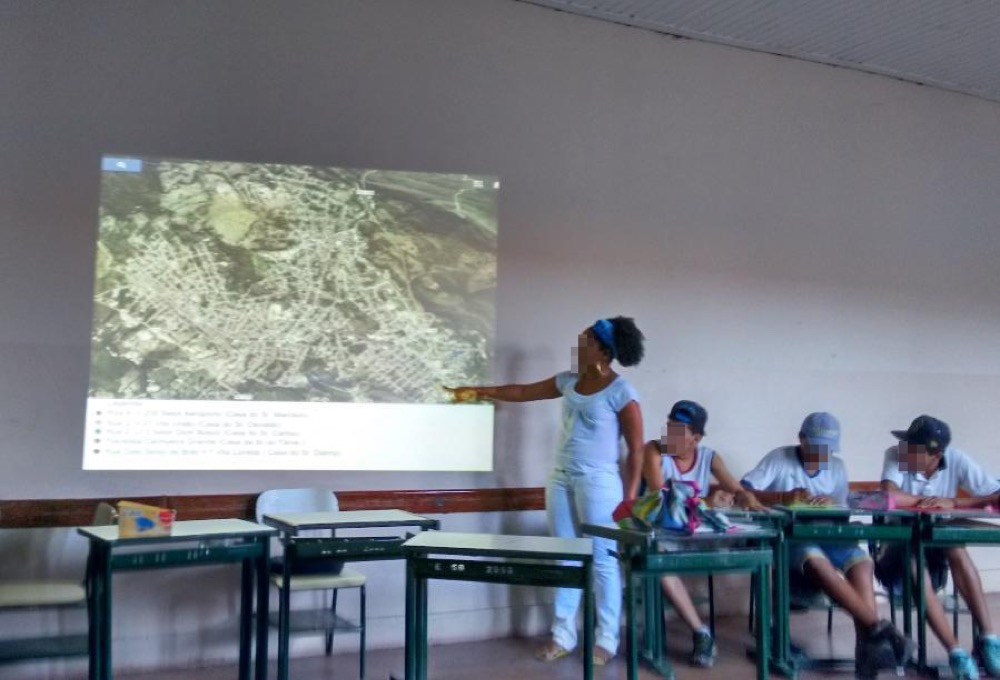
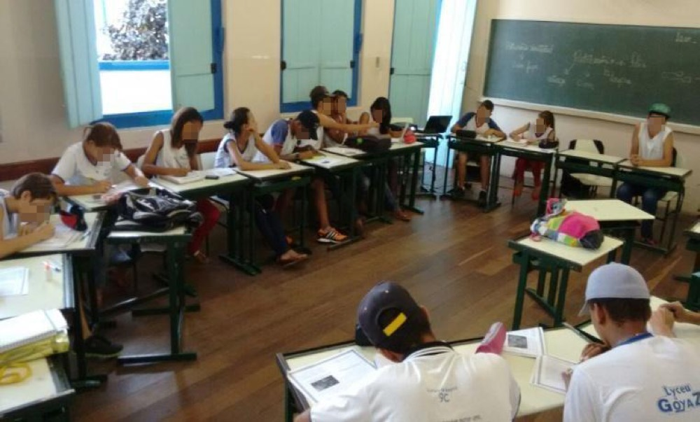
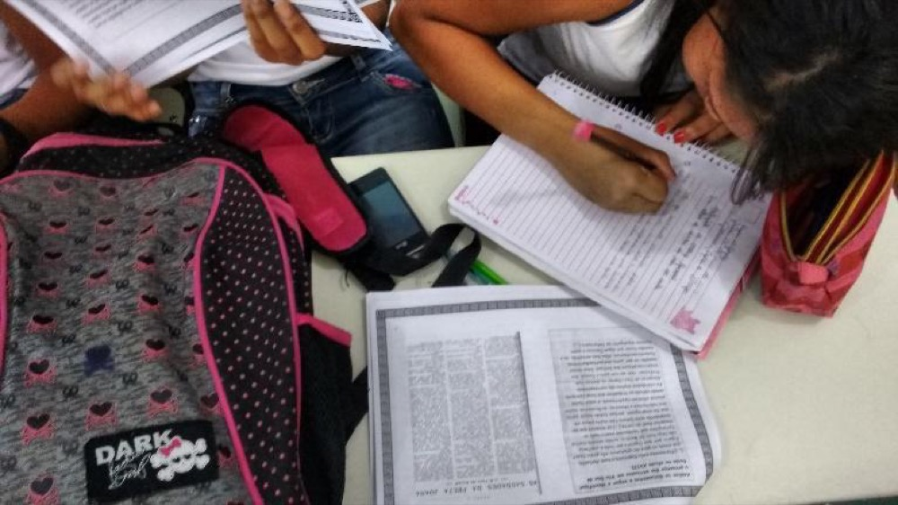
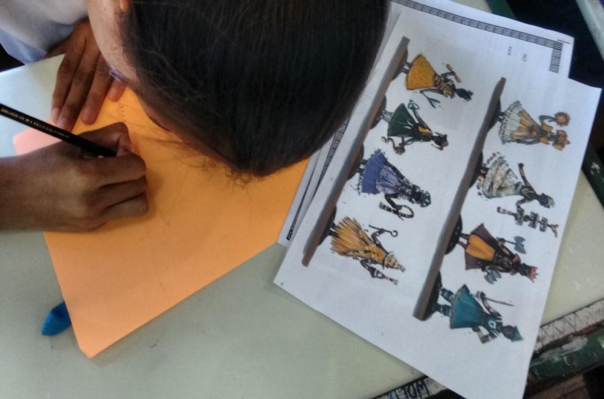

O presente relatório tem a finalidade de apresentar os resultados obtidos pelo projeto de intervenção “Religião de Matriz Africana: Um Olhar de Dentro da Sala de Aula”, da especialização interdisciplinar em Patrimônio, Direitos Culturais e Cidadania (UFG). Executado no Colégio Estadual Lyceu de Goyaz, na Cidade de Goiás, o projeto, realizado em dupla, desenvolveu uma ação prevista na Lei n. 10.639/2003, que aborda o ensino das relações étnico-raciais em sala de aula, voltada para a valorização e respeito à religião de matriz africana na Cidade de Goiás. Teve como objetivo principal, a evidenciação das expressões dos grupos religiosos de matriz africana, como os terreiros de Umbanda e Candomblé e suas influências culturais na Cidade de Goiás, visando levar adolescentes a reconhecer a religião de matriz africana como elemento na formação do Patrimônio Cultural da cidade, presente desde o século XVIII, com a chegada de grupos africanos para escravizar durante o período aurífero. A elaboração deste projeto foi pensada a partir do trabalho monográfico “Caminhos de Aruanda: Trajetória do Candomblé e Umbanda na cidade de Goiás”, realizado no ano de 2013, que teve como objetivo mapear os terreiros ou barracões do Candomblé e Umbanda na Cidade de Goiás. Com sua execução, discutiram-se os conhecimentos teóricos que fundamentam Patrimônio Cultural: Memória e Identidade, com base teórica na concepção de Halbwachs (2006) e Hall (2005) e a metodologia de Educação Patrimonial sugerida por Horta; et al (1999). Para o desenvolvimento das ações, escrevemos e elaboramos uma cartilha educativa, voltada para a valorização e reconhecimento das manifestações religiosas como parte dos elementos que compõem o Patrimônio Cultural da cidade de Goiás, a qual foi utilizada durante a realização do projeto.
Religião de Matriz Africana: Um Olhar de Dentro da Sala de Aula
Aluna: Adelbiane Conceição Campos
Polo: Cidade de Goiás
Orientadora Acadêmica: Shirlene Álvares da Silva
Coordenadora de orientação: Simone Rosa da Silva
1.INTRODUÇÃO
Este trabalho trata-se de um relatório da execução do projeto de intervenção no Colégio Estadual Lyceu de Goyaz intitulado “Religião de Matriz Africana: Um Olhar de Dentro da Sala de Aula”, para conclusão da especialização interdisciplinar em Patrimônio, Direitos Culturais e Cidadania, do Núcleo de Direitos Humanos da Universidade Federal de Goiás. O objetivo principal era propiciar o reconhecimento da religião de matriz africana como elemento na formação do Patrimônio Cultural da Cidade de Goiás.
A escolha do tema e execução deste projeto ocorreram com base nos dados obtidos durante o levantamento de campo para a escrita do trabalho monográfico “Caminhos de Aruanda: Trajetória do Candomblé e Umbanda na cidade de Goiás”, realizado no ano de 2013. Com a realização da pesquisa de levantamento dos terreiros de Umbanda e Candomblé na Cidade Goiás no ano de 2013, pensou-se na necessidade de abordar este tema em sala de aula, devido à quantidade de manifestações religiosas de matriz africana identificadas na cidade.
Durante a pesquisa citada, foram estudados os documentos de cartas régias e códigos de condutas do século XVIII e XIX a fim de dar respostas às inquietações do surgimento das primeiras manifestações religiosas de grupos africanos na cidade neste período. Após a pesquisa bibliográfica, nos arquivos já citados, foi possível ir a campo para, por meio dos depoimentos orais de sacerdotes/líderes religiosos, identificarmos essas manifestações na atualidade. A pesquisa em suas duas fases, bibliográfica e de campo, levou-nos a refletir acerca da contribuição dos africanos para a formação cultural de Vila Boa de Goiás, e, neste caso, a “religião” como elemento do patrimônio imaterial da cidade.
11
Na fase de levantamento (pesquisa de campo), foi possível identificar na Cidade de Goiás cinco terreiros de Umbanda. Com este resultado, levantamos as seguintes indagações: se há expressiva presença de terreiros na cidade, haverá crianças adeptas desta religião nas escolas?; como as crianças adeptas ou não se reconhecem na cultura afro-brasileira, em especial a religião de matriz africana?; como as crianças ou adolescentes adeptos se comportam para serem aceitos na comunidade escolar?; e como são abordados estes assuntos nas disciplinas escolares?
Com tantas questões em aberto, percebemos a importância de trabalhar a temática da religião de matriz africana na sala de aula, uma vez que é uma “manifestação que está inserida na cidade de Goiás, desde o século XVIII, com a chegada dos antigos grupos africanos que vieram na condição de escravos durante o período aurífero” (KARASCH, 2008; CAMPOS, 2013), formando parte do Patrimônio Cultural Goiano
De acordo com dados apontados pelas autoras acima citadas, é preciso refletir acerca da permanência das manifestações religiosas de origem africana na Cidade de Goiás, estando inserida no Patrimônio Cultural Goiano. Desta forma, essas manifestações, hoje chamadas de religião de matriz africana , são portadoras da referência da memória e formação histórica de Vila Boa de Goiás (C/F88, art. 216).
De acordo com autores como João José Reis (2008 e 2010), Renato da Silveira (2014), Luís Nicolau Parés (2001), Roger Bastide (1957) e Reginaldo Prandi (1991), essas manifestações religiosas a partir do início do século XX, passou ser conceituada por religião de matriz africana, uma vez que até este período era denominada por Calundu e a partir de então, devido a perseguições e sincretismo impostas pelo Cristianismo, foram adaptando outras culturas religiosas de europeus e indígenas formando assim a Umbanda, Candomblé, Tambor de Mina, Ritos Nagô, Candombe e Catimbó, espalhados por todo Brasil.
Entretanto, Campos (2013, p. 23-25) nos faz uma alerta acerca das localizações dos terreiros na cidade “as manifestações religiosas afro-brasileiras da cidade de Goiás encontram-se às escondidas nas encostas da cidade, sendo de opção dos líderes religiosos de se manterem longe do preconceito local”. Assim, este é um elemento cultural a ser estudado, discutido e debatido nas escolas, onde as crianças que vivem silenciadas possam assumir sua formação religiosa sem manifestações preconceituosas.
Com todos estes questionamentos e cientes deste silêncio que se apropria das manifestações na infância de assumirem sua religiosidade familiar, buscamos, no projeto de intervenção “Religião de Matriz Africana: Um Olhar de Dentro da Sala de Aula” desenvolver ações de Educação Patrimonial voltadas para a valorização e respeito da religião de matriz africana na sala de aula, com alunos do 8º ano da segunda fase do ensino fundamental. Esperávamos entrevistar os professores da escola contemplada, entretanto, não foi possível devido à quantidade de horas trabalhadas pelos profissionais. Já com os alunos, obtivemos informações através de um questionário objetivo (ver Anexo 1) para entendermos o grau de informação a respeito do conhecimento da religião de matriz africana.
Como a proposta, a princípio, seria a realização de uma palestra, fundamentamos seu conteúdo na concepção de Fernandes & Silva (2011, p. 06) de que “é através da escola que buscamos desmitificar conceitos atribuídos às diferenças culturais, pois que o desconhecido é alimento para o preconceito”. Assim, este relatório encontra-se subdividido de forma que poderá se observar a metodologia utilizada para execução do projeto, os procedimentos e os resultados obtidos.
12
2. DESENVOLVIMENTO
2.1. OBJETIVO GERAL
Implantar ações de Educação Patrimonial Imaterial voltadas para a valorização e respeito à religião de matriz africana na Cidade de Goiás, tomando como expressões os grupos religiosos de matriz africana.
2.1.1. Objetivos Específicos
Analisar documentos do século XVIII e XIX, que apresentam dados da manifestação de origem africana na Cidade de Goiás;
Produzir material didático denominado cartilha educativa, abordando o tema proposto;
Entrevistar gestores da educação para entender como é realizada a abordagem da religião de matriz africana nas escolas;
Entrevistar alunos da escola para obter informações acerca da religião dos que professam a Umbanda e/ou o Candomblé;
Realizar atividades contextualizadas e oficinas de desenhos;
Despertar o sentimento de pertença nos alunos adeptos da religião de matriz africana;
Promover o respeito para com as diferenças do outro em relação à opção religiosa;
Refletir a respeito da contribuição da religião de matriz africana na construção da História, da memória e da identidade dos vilaboenses.
2.2. METODOLOGIA
Os meses que antecederam à execução do projeto foram dedicados à análise dos documentos contidos no trabalho monográfico Caminhos de Aruanda: Trajetória do Candomblé e Umbanda na cidade de Goiás (CAMPOS, 2013). Tais documentações foram analisadas a partir de cartas régias, código de conduta dos séculos XVIII e XIX e noticiários de revistas, que datam do século XX, mas que nos deram suporte para uma análise proposta.
Trabalho demonografia de CAMPOS, Adelbiane Conceição (2013). Os documentos deste trabalho foram pesquisados no MUBAM e Arquivo Frei Simão.
A análise dos documentos e do trabalho citado se deu no sentido de entendermos como foram as primeiras manifestações religiosas de origem africana na Cidade de Goiás e, assim, compreendermos a sua constituição como Patrimônio Imaterial da cidade. Na escrita original do projeto foi proposta uma pesquisa de campo com a comunidade dos terreiros e em geral, porém, isto não ocorreu devido os prazos de entrega e execução do projeto na escola.
A ideia inicial era a realização de entrevistas com professores e alunos. Entretanto, não foi possível devido os tempos de intervalo dos professores serem curtos e, além disso, as escolas estavam de greve e não tivemos oportunidade de encontrar professores disponíveis para responder tais questionários.
Para executar o projeto de intervenção, buscamos um diálogo com a Secretaria Municipal de Educação da cidade e com escolas públicas a fim de sabermos em qual escola ou ano faríamos a ação. Este contato foi feito por meio de ofício (ver Anexo 2), telefones, e-mail e diálogos e nos disponibilizaram a turma do 8º ano C do Colégio Lyceu de Goyaz, que tem cerca de 23 alunos.
Para a abordagem do tema Religião de Matriz Africana com a turma contemplada, foram discutidos os conceitos de memória e identidade, Artigos 215 e 216 da Constituição Brasileira. Utilizamos a metodologia sugerida por Horta et al (1999) “Guia de Educação Patrimonial”, pois a autora apresenta dicas e metodologia de como trabalhar com o instrumento de Educação Patrimonial. As leituras que deram suporte para o conceito de memória, identidade e cultura foram os trabalhos dos seguintes autores: Pollak (1992), Habwachs (2006), Bosi (1988), Hall (2005), Laraia (2006) e Artigos V, 215 e 216 da Constituição Federal de 1998.
13
A Intervenção aconteceu em quatro aulas, sendo que na primeira abordou-se o conceito de memória e identidade em uma linguagem simples. Na segunda, trabalhou-se o conceito de Cultura e Patrimônio Cultural, enfatizando a religião de matriz africana como foco do patrimônio imaterial, relacionando este conceito com os dados obtidos anteriormente, durante a pesquisa já citada. Na terceira aula, buscamos discutir os artigos V, 215 e 216 da Constituição Federal Brasileira, de 1988. E, na quarta aula, realizamos trabalhos práticos, como oficinas de desenhos e produção de textos, buscando despertar o sentimento de pertença nos alunos acerca da cultura afro-brasileira presente na Cidade de Goiás.
2.3. PROCEDIMENTOS
2.3.1. Planejamento e Elaboração de Material
Para trabalhar a religião de matriz africana na sala de aula, primeiramente pensamos a religião como elemento cultural brasileiro, uma vez que “o ser humano encontra na religião uma forma de dar sentido à vida e se organizar socialmente em seu espaço de vivência”, como bem sugere Durkheim (2003, p. 5). Antes de qualquer coisa, planejamos ações de Educação Patrimonial nas escolas públicas, voltadas para a categoria do Patrimônio Imaterial, por se tratar de uma manifestação religiosa herdada de antigos escravos africanos que vieram ao Brasil para trabalhar durante o período aurífero e, consequentemente, em Vila Boa de Goiás.
Para a execução do projeto, elaboramos um questionário que nos levaria às possíveis respostas das questões aqui levantadas sobre o problema abordado. O questionário foi elaborado com a intenção de obter dados a respeito da abordagem da religião de matriz africana na sala de aula, bem como o conhecimento dos alunos sobre o assunto que estava proposto para discussão. O questionário como diagnóstico não era o objeto da intervenção, mas de posse de seus resultados qualitativos, o objeto seria o combate ao preconceito religioso, à segregação e, sim, a conscientização.
No artigo 216 da Constituição Federal, há o conceito de que Patrimônio Cultural Brasileiro “é um conjunto de manifestações, formas de expressão, modos de criar, fazer e viver de uma dada sociedade, as edificações, sítios arqueológicos e etc., pois são portadores da memória e identidade de diferentes grupos sociais brasileiros”. (CF/1988: 216). Ao discutir o conceito de cultura, Horta et al definem o seguinte,
“Todas as ações por meio das quais os povos expressam suas formas específicas de ser constituem a sua cultura, que vai ao longo do tempo adquirindo formas e expressões diferentes. A cultura é um processo eminentemente dinâmico, transmitido de geração em geração, que se aprende com ancestrais que se cria e recria no cotidiano do presente, na solução dos pequenos e grandes problemas que cada sociedade ou indivíduo enfrentam”. (HORTA; et al, 1999 p. 07).
Foi com base nesta concepção, que elaboramos o projeto de intervenção executado no Colégio Lyceu de Goyaz.
Na segunda etapa do projeto buscamos, por meio da análise de documentos e dados retirados do trabalho de Campo (2013), o planejamento das ações a serem executadas. Elaboramos o material didático que denominamos de Cartilha Educativa (ver Anexo 3), que em seu bojo discute: Conceitos e Fundamentos do Patrimônio Culturalinterligados à discussão de Memória e Identidade, (HALBWACHS, 2006 e HALL, 2005), um breve histórico da Religião de Matriz Africana no Brasil e em especial na cidade de Goiás (CASTILLO, 2007; SILVA, 2005 e KARASCH, 2010 e CAMPOS, 2013) e os artigos V, 215 e 216 da Constituição Brasileira de 1988 e a Lei 11.645/08.
14
A intervenção propriamente dita foi desenvolvida em quatro aulas de 50 minutos, nas quais trabalhamos teorias abordando os conceitos de memória, identidade, patrimônio cultural e os artigos V, 215 e 216 da Constituição Federal e análise de documentos do século XVIII de Vila Boa de Goiás. Já a parte prática proposta foi trabalhada por meio de oficinas de desenho e atividades textuais. Como suporte didático, a cartilha trouxe textos educativos com imagens refletidas em slides (data show) que reportaram à religião de matriz africana como Patrimônio Cultural, em uma linguagem simples e pedagógica, de forma que facilitasse o entendimento pelos alunos.
2.3.2 Atividades, Ações e Oficinas Desenvolvidas
Após estabelecermos um diálogo com a comunidade escolar do Colégio Lyceu de Goyaz e a elaborar os materiais didáticos aqui já citados, marcamos a execução do projeto de intervenção para o dia 23 de maio 2015 no período vespertino, sala do 8º ano C, na disciplina de Língua Portuguesa da professora Messias Ferreira da Silva, que acompanhou a ação durante o período das quatro aulas. Na primeira aula, nos apresentamos aos alunos como executoras do projeto de intervenção Religião de Matriz Africana: Um Olhar de Dentro da Sala de Aula, bem como expusemos os objetivos que esperávamos alcançar durante o tempo de realização do projeto. Logo em seguida, apresentamos o material elaborado, bem como aplicamos o questionário. Assim, obtivemos informações acerca do conhecimento dos alunos em relação à discussão proposta pelo projeto.
A partir da aplicação do questionário, partimos para a discussão dos conceitos de Memória, Identidade e Patrimônio Cultural, com o objetivo de fazer uma ligação entre esses conceitos e a história da religião de matriz africana no Brasil e, em especial, na Cidade de Goiás. Neste momento da discussão, pedimos aos alunos que citassem algum costume familiar ou tradições culturais presentes na cidade dos quais eles tinham conhecimento.
Nesta ocasião, foram citadas algumas festas tradicionais e alguns saberes, como a manipulação de ervas para fazer chá e benzimento, a Folia do Divino Espírito Santo e a Procissão do Fogaréu. Alguns alunos relataram a utilização de chás feita pelas avós ou mães para curar certos tipos de enfermidades, alguns ainda relataram o costume de ir a benzedores enquanto crianças e outros disseram que os pais já participaram ou realizaram folia do Divino Espírito Santo em suas casas.
Desta forma, aproveitamos a discussão para ressaltar que nossas práticas cotidianas são resultadas da nossa memória, pois é através deste fenômeno que costumes como estes citados por eles chegaram até a nossa geração.A partir dos depoimentos dos alunos buscamos ressaltar que a religião de matriz africana faz parte da memória de alguns grupos religiosos que estão presentes desde o século XVIII, devido à chegada de escravos africanos na cidade.
Após estas discussões perguntamos aos alunos o que seria Patrimônio Cultural na visão deles? Logo de imediato foram citadas as edificações antigas e ruas de pedras. Entretanto, não sabiam conceituar o que vinha ser Patrimônio Cultural, no caso, Imaterial. Percebemos que até mesmo a professora regente tinha dúvidas sobre o assunto. Então, partimos para esta conceituação, sempre ressaltando que o Patrimônio Cultural da Cidade de Goiás está presente não só nas edificações e ruas de pedras, mas sim naquilo que não podemos ver, mas nos permite sentir e expressar.
15
Para tratar da discussão em torno do Patrimônio Cultural intangível, partimos para a discussão do histórico da religião de matriz africana, bem como seu histórico na Cidade de Goiás. Para a segunda aula, trouxemos uma abordagem referente ao histórico das primeiras manifestações de origem africana no Brasil e na Cidade de Goiás, pontuando a importante contribuição dos escravos africanos para a formação cultural brasileira e, em especial, a Cidade de Goiás.
Neste instante, uma aluna ressaltou que já ouviu dizer que o “Candomblé e Umbanda eram ‘macumba’ e que não sabia que se tratava de uma religião”. A partir desta frase da aluna, trouxemos a discussão acerca destas manifestações religiosas como parte da formação cultural da cidade, pois são portadoras da memória e identidade de diferentes grupos vilaboenses.
Durante a discussão, destacamos a importância de se respeitar as escolhas religiosas, as diferenças étnicas e a orientação sexual. Neste momento, a discussão partiu para as diversas ações preconceituosas que os grupos religiosos da religião de matriz africana vêm enfrentando, bem como o preconceito racial. Perguntamos se alguma pessoa já sofreu algum tipo de preconceito na escola ou na rua. Diversos depoimentos foram compartilhados, nos quais relataram ter sofrido por causa da sua cor de pele e cabelo. Um aluno relatou: “no ano passado me chamaram de ‘batom de asfalto’. Na hora eu fiquei muito triste, mas agora não estou nem aí”. Essa fala permitiu-nos destacar que não há motivos para nos sentirmos envergonhados pelo tom de pele, pois que os escravos africanos deram sua grande contribuição tanto na economia quanto na construção cultural brasileira.
Nesta aula apresentamos um mapa constando os pontos de localização dos terreiros de umbanda na Cidade de Goiás . Durante os apontamentos, a discussão se pautou a partir da oralidade dos zeladores dos terreiros e seus depoimentos sobre os motivos dos terreiros se encontrarem localizados nas encostas da cidade.
CAMPOS, Adelbiane Conceição. Diálogo e Memória: Experiência Compartilhada. REVISTA BRASILEIRA DE HISTÓRIA, v.8, n. 16, ANPUH-Brasil – Associação Nacional de História, 2010.
Na terceira aula, após as discussões estabelecidas na sala de aula, acima relatadas, foi proposta aos alunos uma atividade prática de análise documental. Os documentos analisados pelos alunos foram uma carta régia e um noticiário da revista Oeste. A carta régia foi transcrita e consta na atividade da cartilha educatnoticiárioiva que foi realizada com os alunos, já o da revista Oeste foi anexado como imagem e também consta no material produzido.
Documento nº 2811, rolo 63, p. 453, cx. 49,Projeto Resgate de Documentação Histórica Barão do Rio Branco. Transcrição da arquivista Milena Bastos Tavares. Cidade de Goiás: MDB, 2010.
Propomos a seguinte atividade para os alunos: Após análise dos documentos a seguir, escolha um pequeno trecho que lhe deixou inquieto e escreva um pequeno texto explicativo acerca da sua concepção de Religião de Matriz Africana antes e depois de nossa aula. Esta atividade resultou em uma produção de texto dos alunos do 8º ano C.
Na quarta e última aula, passamos para uma discussão a respeito dos artigos V, 215 e 216 da Constituição Federal Brasileira e, assim, os alunos foram tomando conhecimento a respeito da política de preservação do Patrimônio Cultural e da liberdade de culto individuais. Neste momento, surgiram indagações acerca dos incômodos por parte dos terreiros, por tocarem instrumentos até muito tarde, ou pelos evangélicos ficarem gritando com tanta altura até tarde nas igrejas. Houve uma pergunta interessante elaborada por uma aluna: “por que as pessoas não reclamam do barulho das igrejas de crente e dos barulhos dos tambores algumas pessoas reclamam, se o barulho e o incômodo são os mesmos?”
16
Neste instante, todos ficaram em silêncio e, aos poucos, as respostas foram surgindo, de forma que eles mesmos foram buscando respostas do tipo: “se todos têm direitos iguais de culto, não se deve reclamar do barulho da outra se ambas fazem barulho!”. E, assim, seguimos com a discussão em torno da importância de se preservar, valorizar e reconhecer os elementos culturais presentes na cidade como portadores da memória e identidade da Cidade de Goiás.
Após a discussão a respeito da legislação, oferecemos aos alunos uma seção de vídeo que reportava às manifestações religiosas de matriz africana no Brasil. Após a exibição do filme BrincandocomosDeuses, propusemos uma atividade aos alunos, que produziram um desenho retratando os elementos da cultura afro-brasileira presentes na Cidade de Goiás.
Encerramos as ações e oficinas com o quarto encontro, que aconteceu com o intuito de levar aos adolescentes do Colégio Estadual Lyceu de Goyaz o conhecimento das manifestações religiosas de Matriz Africana na cidade de Goiás.
2.4 RESULTADOS
As ações desenvolvidas na execução do projeto de intervenção foram elaboradas assumindo o compromisso de uma educação para o conhecimento, na formação de sujeitos críticos para com o exercício da cidadania e da valorização da religião de matriz africana como elemento do Patrimônio Cultural da Cidade de Goiás. Todo esse processo em uma constante construção e elaboração da cultura local, voltada para tradições que rememoram a cultura afro-brasileira, na construção identitária de diferentes grupos sociais vilaboenses.
A Educação Patrimonial foi pensada a partir da concepção de Horta et al (1999) que a enfatizam como um instrumento de alfabetização cultural que possibilita aos indivíduos fazerem a leitura do mundo que o rodeia, levando-os à compreensão do universo sociocultural e da trajetória histórico-temporal em que estão inseridos (p. 06). Esperou-se com esta ação, despertar a reflexão dos alunos e da comunidade escolar do Colégio Estadual Lyceu de Goyaz acerca do sentimento de pertença, valorização e apropriação da cultura afro-brasileira presente na Cidade de Goiás, tal como podemos observar nos instrumentos da capoeira e nas rodas de samba, que sempre acontecem na praça do coreto deste município. Desta forma, esta ação propiciou aos alunos o desenvolvimento do exercício da cidadania, do bem-estar material e espiritual, e, consequentemente, da elevação da autoestima ao despertar o sentimento de identificação com suas raízes históricas.
Durante a realização da ação, obtivemos resultados positivos, pois que, além da participação dos alunos, os professores apresentaram um grande interesse pelas discussões propostas, inclusive tiveram uma participação constante nas oficinas. Aos alunos, foi possível perceber que a intervenção despertou o sentimento de pertença pela cultura afro-brasileira, não somente pelas manifestações religiosas, mas pelos elementos que compõem o universo cultural brasileiro, em especial os de origem africana.
3. CONCLUSÕES
Ao executar o projeto de intervenção no Colégio Estadual Lyceu de Goyaz, foi possível perceber a necessidade de dar continuidade à ação de Educação Patrimonial voltada para o conhecimento da religião de matriz africana e pela valorização da memória cultural dos grupos africanos que vieram se escravizar em Vila Boa de Goiás no século XVIII.
17
Durante a ação, nos deparamos com depoimentos de alunos negros por terem sofrido agressões verbais e preconceituosas pela cor da pele ou estilo de cabelo. A partir destes depoimentos, percebemos que este projeto seria uma semente que estava em plantação, mas que para ser regada e germine é preciso que os professores deem continuidade às discussões em torno da valorização e respeito pela memória cultural do outro, bem como às diferenças religiosas étnicas que compõem a diversidade escolar.
Propõe-se uma capacitação para professores, para que estejam preparados para lidar com situações como essas e possam dar melhor suporte aos alunos que vêm sofrendo preconceitos raciais e religiosos na sala de aula. Ainda há o que ser feito em uma sociedade como a da Cidade de Goiás, para que possam reconhecer que os escravos africanos tiveram contribuição essencial para a construção cultural da cidade, uma vez que criou-se uma imagem de que o Patrimônio Cultural da cidade está baseado somente na procissão do fogaréu, nas festas religiosas católicas e nas edificações em estilo europeu; esquece-se que parte dessas construções possivelmente foram construídas pelas mãos de escravos africanos ou seus descendentes. Enquanto isso, festas e cultos ocorridos dentro dos terreiros, em sua maior parte, precisam ser às escondidas, mesmo com uma quantidade significativa de terreiros na cidade.
Notou-se que o conteúdo pautado no tema da manifestação cultural de origem africana quase não se é discutido na escola, ora por falta de materiais pedagógicos ora por falta de conhecimento dos próprios professores sobre o assunto. Esta dificuldade foi percebida através de conversas informais, ao ouvir depoimentos de colegas professores que atuam nas escolas da cidade. Nesse caso, acreditamos que é através dos professores, que são mediadores e multiplicadores do conhecimento, que poderemos formar um elo entre o conhecimento adquirido por eles durante o curso de capacitação e as experiências vividas pelas crianças/adolescentes, as quais podem ser compartilhadas com os professores.
No que se refere às crianças/adolescentes, este projeto teve a intenção de desenvolver uma ação maior. A intenção era voltar e contemplar toda a escola, oferecendo a oficina de atabaques, como foi proposto no projeto. Infelizmente, isso não foi possível, devido à falta de disponibilidade de data pelos dos detentores do saber que compõem o grupo e tocam o atabaque, não coincidindo com a data de execução do projeto para esta etapa.
Um aspecto importante a se observar é se conseguimos contemplar às indagações e questionamentos iniciais: “se há a presença expressiva de terreiros na cidade, haverá crianças adeptas desta religião presentes nas escolas?” E, ainda, “como as crianças adeptas ou não se reconhecem na cultura afro-brasileira em especial a religião de matriz africana?”; “como as crianças ou adolescentes adeptos se comportam para serem aceitos na comunidade escolar? ”; “como são abordados estes assuntos nas disciplinas escolares? ”. A estas questões, podemos salientar que foi observado: não conseguimos identificar ao certo se há a presença de alunos adeptos da religião de matriz africana no Colégio Lyceu, pois, para isto, seria preciso realizar uma pesquisa que envolva toda a comunidade escolar e este projeto veio atender a apenas uma sala de aula; observamos, por meio da atividade de desenho com os alunos, em especial os do 8º ano C, que muitos se identificaram na capoeira, que faz parte da cultura afro-brasileira presente na Cidade de Goiás desde muito tempo; quanto ao comportamento das crianças para serem aceitos na comunidade escolar, muitas crianças apresentaram indício de que preferem se reconhecer mais como católicas do que candomblecistas para evitar constrangimentos e apelidos pejorativos do tipo “fulano é macumbeiro”; sobre a forma de como o assunto da religião de matriz africana é abordado na escola, de acordo com a resposta do questionário dos alunos, os professores não tratam este assunto nas disciplinas e, menos ainda, da cultura afro-brasileira no geral.
18
Esta intervenção poderia ter-nos propiciado outros resultados, pois terminamos a ação prevendo a necessidade de realizar outra etapa que atenda maior quantidade de alunos e professores, para a promoção do respeito e reconhecimento da religião de matriz africana, como parte dos elementos do Patrimônio Cultural da cidade. Ainda há muito o que se fazer, pois acreditamos que somente a escola é o caminho para desmistificar preconceitos em torno das manifestações religiosas de matriz africana.
REFERÊNCIAS
CAMPOS, Adelbiane Conceição. CaminhosdeAruanda: trajetória do Candomblé e Umbanda na cidade de Goiás. Monografia. Goiás – GO, Universidade Estadual de Goiás (UEG), 2013.
CAMPOS, Adelbiane Conceição. Diálogo e memória: experiência compartilhada. Revista Brasileira de História, São Paulo, v. 8, n. 16, ANPUH-Brasil – Associação Nacional de História, 2010.
CASTILLO, Lisa Earl; PARÉS, Luis Nicolau. MarcelinadaSilvaeseumundo: novos dados para uma Historiografia do Candomblé de Ketu. Revista Afro-Ásia, Salvador, nº 36, p. 111-151, 2007.
DURKHEIM, Emile. Formaselementaresdavidareligiosa. 2. ed. São Paulo: Martins Fontes, 2000.
FERNANDES, Gláucio da Gama. SILVA, Arlete Oliveira Conceição Anchieta da. Liberdade religiosa nos cultos afro-brasileiros: um estudo na cidade de Manaus – amazonas. XI Congresso Luso Afro Brasileiro de Ciências Sociais, UFBA, 2011. Disponível em: <www.xiconlab.eventos.dype.com.br/.../1308348266_ARQUIVO_Liberd...>>. Acesso em 30/07/2015.
HALBWACHS, Maurice. Amemóriacoletiva. São Paulo: Centauro, 2006.
HALL, Stuart. Aidentidadeculturalnapós-modernidade. 10. ed. Rio de Janeiro: DP&A, 2005.
HORTA, Maria de Lourdes Parreiras; GRUNBERG, Evelina; MONTEIRO, Adriane Queiroz. GuiadeEducaçãoPatrimonial. Brasília: Instituto do Patrimônio Histórico e Artístico Nacional, Museu Imperial, 1999.
KARASCH, Mary. Americancounterpoint: new approaches to slavery and abolition in Brazil. Yale University: New Haven, Connecticut, 2010.
FONSECA, Maria Cecília Londres. Referências Culturais: base para novas políticas de patrimônio in IPHAN; in: ____. Inventário Nacional de Referências Culturais: Manual de Aplicação. Brasília: IPHAN/ Minc/DID. 2000, p. 11-21.
SILVA, Vagner Gonçalves da. Candombléeumbanda: caminhos da devoção brasileira. 2. ed. São Paulo: Selo Negro, 2005.
Religião de Matriz Africana: Um Olhar de Dentro da Sala de Aula
Aluna: Sinara Carvalho
Polo: Cidade de Goiás
Orientadora Acadêmica: Shirlene Álvares da Silva
Coordenadora de orientação: Simone Rosa da Silva
Anexos

Imagem 11: Desenhos dos alunos

Imagem 12: Desenhos dos alunos

Imagem 13: Desenhos dos alunos
1. INTRODUÇÃO
O presente relatório tem o propósito de apresentar informações relativas ao desenvolvimento do projeto de intervenção, que é requisito à conclusão da especialização interdisciplinar em Patrimônio, Direitos Culturais e Cidadania, o qual possui a temática “Religião de Matriz Africana: Um olhar de dentro da sala de aula”
Projeto de intervenção proposto por Adelbiane Conceição e Sinara Sá.
O projeto é proveniente dos dados obtidos em pesquisas realizadas para a monografia de conclusão de curso “Caminhos de Aruanda: Trajetória do Candomblé e Umbanda na cidade de Goiás”, realizadas no ano de 2013 pela pós-graduanda Adelbiane Conceição Campos. O trabalho faz uma abordagem dos terreiros de Umbanda e Candomblé na Cidade de Goiás, no ano da pesquisa, valorizando as expressões religiosas de matriz africana e organizando-as, já que essa cultura religiosa se representa em grande parte através de sua oralidade.
19
Por meio deste trabalho foi possível a organização do projeto de intervenção, sabendo que sua execução é de culminância a estudantes, tendo como público-alvo escolhido os alunos do Lyceu de Goyaz, na Cidade de Goiás. Por intermédio da coordenação pedagógica da escola, a turma selecionada foi o 8º ano C, do turno vespertino. A professora de Português, Messias Ferreira da Silva, nos acompanhou durante as quatro aulas, no dia 23 de maio de 2015.
É notório que quando se trabalha o Patrimônio Cultural nas escolas se desperta a ligação do sujeito com suas heranças culturais e sua responsabilidade na valorização e preservação do Patrimônio, fortalecendo a cidadania com a vivência real num processo dinâmico de inclusão social. No Brasil, o órgão governamental responsável por zelar do Patrimônio é o Instituto do Patrimônio Histórico Nacional e Artístico Nacional – IPHAN , órgão que acredita no processo educacional como caminho para que o sujeito se sinta pertencente, inserido e responsável pelo patrimônio que o circunda.
Nascido como secretaria durante o governo Vargas – SPHAN.
O desígnio em adotar a questão do ensino da Cultura Afro-Brasileira e Africana está na própria história da Cidade de Goiás, que teve e tem a presença do negro aqui trazido pela força da escravidão nos afazeres da extração do ouro, estando à mercê dos quereres da população branca. Nesse sentido, o negro está vinculado à cultura material e imaterial da Cidade de Goiás, que é Patrimônio da Humanidade, possuindo história e deixando suas marcas nas casas, igrejas, comidas e costumes vilaboenses.
Assim, valorizar e reconhecer as raízes africanas presentes no nosso dia a dia é proteger a nossa história. O povo vilaboense, além de executar os preâmbulos constitucionais sobre patrimônio, por meio da Lei n. 10.639/2003, tem como obrigatórios os estudos da História e Cultura Afro-Brasileira e Africana nas discussões dos currículos escolares.
Ao trabalhar o assunto religião de matriz africana, foi feito um apanhado de culturas que, por vezes, ficaram à margem da sociedade, desprezadas por não se adequarem ao “Brasil Católico”, com olhares politeístas aos Orixás, e que acabaram sendo excluídas da história oficial. No entanto, percebemos a necessidade de sua inserção no cotidiano social, já que a diversidade religiosa existe, e cabe a nós, educadores, semear ações de tolerância e respeito a todos cidadãos.
Falar das religiões afro-brasileiras é falar de todos nós, um país múltiplo em suas religiões, culturas e sociedades, que para Woordward (2000),
“[...] é por meio dos significados produzidos pelas representações que damos sentido à nossa experiência a aquilo que somos. Podemos inclusive sugerir que esses sistemas simbólicos tornam possível aquilo que somos e aquilo no qual podemos nos tornar [...]”. WOORDWARD (2000, p. 17)
Por essas direções, à medida que desenvolvemos tais estudos realizamos ações como esta, resultante desse projeto de intervenção. Desta forma, pode-se cumprir as expectativas presentes tanto na Lei n. 10.639/2003, quanto na Política de Educação Patrimonial, Lei n. 9.795/99, que estabelece a Política Nacional de Educação Ambiental, na Política Nacional para Educação em Direitos Humanos. Ainda, tivemos fundamentação nos diversos documentos internacionais dos quais o Brasil é signatário, que reconhecem a igualdade e valorização das raízes africanas em meio ao solo brasileiro (Soares, 2009).
20
Para o estudo de uma História baseada em costumes e hábitos orais, a cultura africana ainda se fortalece através dos traços passados de geração a geração. Segundo Halbawchs (2006, p.111), “a necessidade de escrever a história de um período, de uma sociedade e até mesmo de uma pessoa só desperta quando elas já estão bastante distantes no passado “[...] pois os escritos permanecem, enquanto as palavras e o pensamento morrem”. Portanto, como única forma de fixar as lembranças, que agora são exteriores por não pertencerem mais a grupos presentes, apresenta-se a narrativa histórica dos grupos religiosos fixados nessa pesquisa.
2. DESENVOLVIMENTO
2.2. OBJETIVO GERAL
Implantar ações de Educação Patrimonial Imaterial voltada para a valorização e respeito à religião de matriz africana na Cidade de Goiás, tomando como expressões os grupos religiosos de matriz africana.
2.1.1. Objetivos Específicos
Entrevistar gestores da educação para entender como é realizada a abordagem da Religião de Matriz Africana nas escolas;
Entrevistar alunos da escola para obter informações acerca da religião dos que professam a Umbanda e/ou o Candomblé;
Despertar o sentimento de pertença nos alunos adeptos da religião de matriz africana;
Promover o respeito para com as diferenças do outro em relação à opção religiosa;
Refletir a respeito da contribuição da religião de matriz africana na construção da História, da memória e da identidade dos vilaboenses.
2.3. METODOLOGIA
Antes da execução da intervenção, nos debruçamos na análise dos documentos do trabalho monográfico Caminhos de Aruanda: Trajetória do Candomblé e Umbanda na cidade de Goiás , como foi proposto na escrita do projeto. Os documentos analisados foram cartas régias, código de conduta séculos XVIII e XIX e um noticiário da revista Oeste que traz um conto de uma história de certa negra chamada preta Joana. Estes são noticiários que reportam o período pós-escravidão em Goiás, nos quais foi possível encontrar elementos que compõem as manifestações religiosas de antigos grupos africanos na antiga Vila Boa de Goiás.
CAMPOS, Adelbiane Conceição, 2013..
Desta forma, os fizemos para entendermos como se deu o estabelecimento da religião de matriz africana nas capitanias de Goiás, em especial na antiga Vila Boa. Ao analisarmos estes documentos, tal como a pesquisa de campo do trabalho aqui citado, percebemos que estas manifestações se encontram presentes neste lugar desde a chegada dos escravos, que vieram trabalhar no período aurífero. Assim, podemos refletir que a religião de matriz africana na Cidade de Goiás, mesmo com tanta opressão em detrimento às religiões oficiais, tornou-se, para muitos grupos religiosos, parte do Patrimônio Cultural presente na cidade.
No projeto de intervenção, propusemos entrevistas com a comunidade de terreiros e comunidade em geral, com professores (as) da rede pública de ensino e com alunos (as). Entretanto, conseguimos resultados apenas com os (as) estudantes. Com a comunidade de terreiros e em geral não foi possível devido ao tempo para a execução do projeto, que estava muito imediato. Com os (as) professores (as) isto não foi possível porque as escolas estavam em greve e não conseguimos encontrá-los para estabelecer um diálogo acerca dos objetivos de nosso trabalho.
21
Ao passo que a intervenção se aproximava, buscamos um diálogo constante com as escolas que pudessem ser contempladas neste projeto e, mais uma vez, por estarem em greve estadual, apenas a escola Lyceu de Goyaz nos recebeu para executar esta ação. O diálogo no colégio se deu a partir de telefonemas e ofícios. A escola, na pessoa do diretor Willian da Silva Silvestre, nos disponibilizou a sala do 8º ano C, do período vespertino, possuindo cerca de vinte e três (23) alunos.
Como foi proposto no projeto de intervenção, elaboramos uma cartilha educativa para trabalhar com os (as) estudantes em sala de aula. A elaboração desta cartilha se deu na tentativa de obter um suporte didático para que os (as) alunos (as) acompanhassem a discussão proposta na intervenção. Nos conteúdos propostos na cartilha, encontram-se os conceitos de memória, identidade, patrimônio cultural e uma breve discussão em torno do histórico da religião de matriz africana no Brasil e, em especial, na Cidade de Goiás, além de atividades propostas, as quais foram efetivadas durante a intervenção.
Para a abordagem do tema religião de matriz africana com a turma contemplada, foram discutidos os conceitos de memória e identidade, Artigos 215 e 216 da Constituição Brasileira. Utilizamos o “Guia de Educação Patrimonial”, de Horta et al (1999), com as dicas e a metodologia de como trabalhar com o instrumento de Educação Patrimonial. As leituras que deram suporte para o conceito de memória, identidade e cultura foram apoiadas nos seguintes autores: Pollak (1992), Habwachs (2006), Bosi (1988), Hall (2005), Laraia (2006) e Artigos V, 215 e 216 da Constituição Federal de 1998.
Escolhemos como critério a elaboração de slide interativo e didático que levassem os (as) alunos (as) a compreensão do tema exposto sem dificuldades. Estes slides acompanharam o conteúdo da cartilha elaborada para tal discussão, bem como as atividades que tiveram como proposta obter conhecimento acerca do entendimento dos (as) estudantes sobre o objeto abordado. As atividades nomeadas tiveram como práticas pedagógicas a produção de textos informativos e desenhos que descrevessem a cultura afro-brasileira na Cidade de Goiás.
A intervenção aconteceu em quatro (4) aulas consecutivas, iniciando no segundo horário e prosseguindo até ao término do tempo escolar. Assim, começamos a primeira aula discorrendo sobre o conceito de memória e identidade em uma linguagem simplificada. Para o segundo momento, se trabalhou o conceito de Cultura e Patrimônio Cultural, enfatizando a religião de matriz africana como foco do Patrimônio Imaterial, em que fizemos a ligação deste conceito com os dados obtidos durante a pesquisa. Na terceira aula, buscamos discutir os artigos V, 215 e 216 da Constituição Federal Brasileira de 1988, e, por fim, na quarta aula, realizamos trabalhos práticos com oficinas de desenhos.
2.3. PROCEDIMENTOS
2.3.1. Religião de Matriz Africana: Um Olhar de Dentro da Sala de Aula
A cultura, diferentemente do homem, não tem um ciclo preciso de vida, sua transmissão é feita de pessoa a pessoa durante os tempos. O indivíduo, ao contrário, tem suas limitações, em seu nascimento ainda não possui uma personalidade, sendo esta constituída segundo o seu desenvolvimento, influenciado pela cultura. Sua aprendizagem, articulada aos fatores externos que lhe cercam, pode ser feita pela linguagem ou adquirida conforme as ações físicas dos membros dessa sociedade, ou seja, pela imitação.
22
Com base nesses princípios, foi concebida a formulação teórico-metodológica do projeto de intervenção e sua proposta executada através de um planejamento didático, que abrangeu quatro aulas acompanhadas pela professora regente de Língua Portuguesa Messias Ferreira da Silva e pela professora de apoio da sala, Lucimara Fulanette, na escola Lyceu de Goyaz.
Para a abordagem do tema religião de matriz africana, buscamos elaborar o questionário com perguntas objetivas, com o propósito de entendermos o nível de conhecimento dos (as) alunos (as) e como este tópico é abordado em sala de aula. No primeiro momento da aula, nos apresentamos aos alunos e logo em seguida partimos para explicação do porque da nossa intervenção e os objetivos do projeto.
Desse modo, entregamos o questionário para ser respondido pelos (as) estudantes e, logo em seguida, apresentamos o material didático elaborado, podendo partir para a definição dos conceitos de Memória, Identidade e Patrimônio Cultural. Neste instante, refletimos por meio de imagens sobre as manifestações religiosas presentes no Brasil e, em especial, na Cidade de Goiás. Explanamos o assunto através de indagações, tais como: o que seria o Patrimônio Cultural na concepção dos estudantes; quais as manifestações culturais às quais eles têm conhecimento em seu cotidiano citadino. As respostas surgiram de forma do entendimento de cada um, pois, tornou-se perceptível que o conhecimento em torno do Patrimônio Cultural da cidade, estava presente apenas naquilo que eles pudessem ver, como, por exemplo, o Patrimônio Edificado.
Assim sendo, com o uso de slides, falou-se primeiramente aos (as) estudantes, sobre o que é Educação Patrimonial e o papel da memória coletiva e individual. Buscou-se evidenciar como os grupos negros trazidos para a Cidade de Goiás contribuíram com seus costumes e tradições e, conseguintemente, como suas ações no passado influem ainda na atualidade; que seus traços são visíveis nas comidas, nas danças, no modo de vestir, de falar, no gingar da capoeira e outros fatores que expressam a cultura negra no nosso dia a dia.
Neste instante, aproveitamos a discussão dos (as) alunos (as) para explicar o conceito de Patrimônio e a importância da memória e da identidade para a preservação do Patrimônio Cultural, bem como a função destes para a manutenção da cultura brasileira. O nosso patrimônio é construído através da nossa memória, a forma como aprendemos a lidar com o nosso meio, os ensinamentos de nossas gerações passadas, e é através da memória coletiva e individual dos nossos antepassados que é possível chegar a tais ensinamentos até nós. Pensemos também que este aprendizado nos leva a produzir cultura, conceito que foi definido por Tylor (apud LARAIA, 2006, p. 25) como os “conhecimentos, crenças, artes, moral, leis, costumes ou qualquer outra capacidade ou hábitos adquiridos pelo homem como membro de uma sociedade”.

Imagem 1: discussões dos conceitos na primeira aula. Colégio Estadual Lyceu de Goyaz. Foto: Sinara Carvalho Sá, 2015.
No segundo momento desta intervenção, partimos para uma discussão em torno do histórico da religião de matriz africana no Brasil, dando ênfase principal à Cidade de Goiás. Salientamos que esta religião vem enfrentando ao longo de sua história grandes preconceitos por parte de outras religiões. Incialmente, isso se deu na tentativa dos grupos dominantes de não tolerar as diferenças religiosas que existiam no Brasil e pelo desejo de hegemonizar o Cristianismo no mundo. Por isso, “demonizaram” a religião do outro.
23
Visto isso, pedimos aos (as) alunos (as) que fizessem seu depoimento, caso já houvessem sofrido algum preconceito na escola ou na rua. Um deles relatou sofrer preconceito racial por ser negro e aproveitamos, então, para discutir o preconceito racial e a importância de se respeitar as diferenças em nossa sociedade.
Esboçando um processo de identificação dos (as) alunos (as) com a cultura afro-brasileira, apreciamos a definição do que são as religiões de matriz africana, especificamente o Candomblé e a Umbanda, sendo que abordamos em um foco geral (Brasil) até regionalizarmos à perspectiva vilaboense, conferindo os terreiros na Cidade de Goiás com auxílio de um mapa digital . Quase todos os presentes na classe não sabiam dos dados referidos, mesmo tendo em vista que muitos deles moravam próximos aos locais citados.
Ver: CAMPOS, Adelbiane Conceição Diálogo e Memória: Experiência Compartilhada REVISTA BRASILEIRA DE HISTÓRIA, v.8, n. 16, ANPUH-Brasil – Associação Nacional de História, Copyright 2010.

Imagem 2: Aula de exposição do mapa: Localização dos Terreiros de Umbanda na Cidade de Goiás. Foto: Sinara Carvalho Sá, 2015.
Finalizamos esta aula propondo uma atividade de produção de texto interpretativo, para o qual os alunos analisaram os documentos do século XVIII e XX inseridos na cartilha educativa. Neste momento, esta atividade proporcionou aos alunos o contato com fatos do passado pelo manuseio dos documentos expressos na cartilha.
Ver: CAMPOS, Adelbiane Conceição Campos Caminhos de Aruanda: Trajetória do Candomblé e Umbanda na cidade de Goiás/ UEG, 2013.

Imagem 3: Alunos (as) distribuídos em círculo, com o propósito de levar à interação ao conteúdo trabalhado. Foto: Sinara Carvalho Sá

Imagem 4 : Estudantes analisam documento do século XVIII, presente na cartilha de estudo. Foto: Sinara Carvalho Sá
Na terceira aula, falamos sobre os artigos V, 215 e 216 da Constituição Federal Brasileira, para que os (as) estudantes tivessem o conhecimento de que estes artigos resguardam o Patrimônio Cultural, os direitos e a liberdade aos cultos. Ao propor esta discussão aos (as) alunos (as), percebemos que os (as) mesmos (as) não tinham noção de que a Legislação amparava tais expressões. Esta percepção se deu quando, por parte destes, foram apresentados questionamentos sobre o porquê de preservar o Patrimônio de sua cidade.
A seguir, voltamos à explicação de que o Patrimônio Cultural presente na Cidade de Goiás é o responsável por portar a nossa memória, identidade e por guardar a história de diferentes grupos brasileiros. E, assim, para enriquecer o conteúdo, exibimos na quarta aula o documentário “Brincando com os Deuses” , que apresenta através da oralidade a religião de matriz africana no Brasil.
A Constituição Federal Brasileira de 1988, em seu Artigo V, diz que é direito de todos a manifestação de cultos. Já os artigos 215 e 216, descrevem que as manifestações, expressões artísticas, danças, músicas, documentos, arquitetura, sítios arqueológicos são referências da memória e identidade do povo brasileiro, constituindo assim o que é o Patrimônio Cultural brasileiro, cabendo ao Estado a obrigação na sua preservação.
Dando sequência a apresentação de slides, foi questionado aos alunos e alunas como a cultura se mantém viva para os moradores da Cidade de Goiás, logo indicando que todos os cidadãos têm, garantido por lei, o seu direito de igualdade, de liberdade, de direito à vida, etc. Foi debatida também a obrigatoriedade do Ensino da Cultura Afro-Brasileira e Africana, fazendo-os indagar por qual motivo que esse tema seria tão limitado nos seus conteúdos escolares, já que grande parte do povo brasileiro advém da população negra, e, mesmo que os cruzamentos étnicos venham levando ao branqueamento da população ao longo dos tempos, ainda se carrega os traços dos negros trazidos da África para o Brasil.
24
Na quarta e última aula, foi passado o filme “Brincando com os Deuses”, que mostra crianças que convivem com o Candomblé relatando suas experiências com o Sagrado (Orixás). No olhar atento às cenas do documentário, percebemos que os (as) estudantes não tinham ideia de que crianças de diversas idades são empoderadas e detentoras do saber de sua religião. Para complementar e alimentar a curiosidade, foi exposta uma imagem contendo todos os Orixás, sendo que definimos a característica de cada um destes e suas semelhanças com os seres humanos. Os (as) estudantes ficaram surpresos ao saber que poderiam existir neles semelhanças com os Orixás; deste modo, começaram uma análise múltipla, ora a si, ora ao seu (sua) colega.
Como pode ser observado nas imagens abaixo, os estudantes interagiram bem com o conteúdo, participando de todas as propostas pedagógicas. Mesmo que o projeto tenha abrangido quatro aulas contínuas, em nenhum momento foi questionado o tempo de execução; pelo contrário, apesar de a princípio estarem bem acanhados, por ser este um assunto desconhecido, aos poucos foram interagindo com o tema, que atingiu de maneira similar a todos (as).

Imagem 5: Estudantes analisam documento do século XVIII, presente na cartilha de estudo. Foto: Sinara Carvalho Sá

Imagem 6: Capa de apresentação dos slides utilizados na prática do Projeto de Intervenção. Foto: Sinara Carvalho SáImagem 7: Aluno escreve seu posicionamento às religiões de matriz africana após a apresentação das professoras Adelbiane e Sinara e leitura de cartilha de estudo. Foto: Sinara Carvalho Sá
2.4. RESULTADOS
A partir do resultado do questionário foi buscada a melhor maneira de se trabalhar um conteúdo considerado “polêmico”, por ser desconhecido. Ou seja, não havia um conhecimento prévio por parte da sociedade, causando pré-conceitos sobre as religiões de matriz africana, que sempre estiveram à “margem” do processo histórico brasileiro, não sendo diferente na Cidade de Goiás.
Através do desenvolvimento das atividades propostas aos (as) estudantes, foi visível a interação positiva destes (as) com o conteúdo ministrado, tendo um olhar sensível a uma temática pouco ou nunca discutida em sala de aula. Em uma conversa informal com professores (as) da escola, foi identificado que a não transmissão das temáticas que envolvem a cultura afro-brasileira muito se deve à escassez de materiais didáticos e à existência da negação por parte de alguns profissionais em abordar o negro e as religiões de matriz africana, ora pelas dificuldades na orientação no planejamento do conteúdo, ora pela reação dos estudantes e de seus responsáveis.
O resultado das atividades realizadas foi surpreendente. No que se refere à escrita, os assuntos abordados pelos alunos foram: falta de esclarecimento sobre as religiões de matriz africana; o preconceito destinado a elas, que leva à ideia de que tudo se resume a “macumba”; a necessidade de se respeitar a religião do “outro”.
Os (as) estudantes afirmaram que a presença dessa temática em sala de aula trouxe conhecimento sobre o assunto. Eles (as) conseguiram assimilar a forma que se organiza um terreiro e, consequentemente, as dificuldades que os participantes destas religiões passam devido ao preconceito, formando nos (as) alunos (as) uma admiração pela perseverança de seus membros.
25
Já na confecção dos desenhos, pôde-se perceber uma configuração de olhares aos instrumentos de percussão, que também são utilizados na capoeira, no samba e o encanto aos Orixás, como se expressa nas figuras ilustrativas deste trabalho. Desses desenhos, o que mais me foi marcante é o desenho do aluno Gabriel Tavares, que aborda o mundo, ele e o colega em seu centro e as pessoas (humanidade) unidas, sem distinção de raça, cor, religião, etc.; além do respeito às religiões de matriz africana.
Afirmar, pois, em sala de aula, os terreiros presentes em nossa cidade, é dizer que a cultura é ampla e deve ser afirmada e reconhecida, independentemente do grupo ao qual o estudante pertença. Isso contribuirá para a formação de uma identidade voltada em amplitude ao povo vilaboense.
Segundo Horta et al (1999, p.06), a Educação Patrimonial é aplicada como “um instrumento de alfabetização cultural que possibilita aos indivíduos fazerem a leitura do mundo que o cerca, levando-os a compreensão do universo sociocultural e da trajetória histórico-temporal em que estão inseridos”. Assim, no momento da aplicação do projeto de intervenção os resultados adquiridos foram positivos.
Os (as) alunos (as) se viram comuns em seu cotidiano a partir dos dados mensurados, visualizando como a música e a dança do “estilo vilaboense” se fazem presentes nas religiões de matriz africana com as rodas de capoeira do coreto no domingo. Entender o que acontece ao seu redor é uma necessidade, e com esse projeto, os (as) adolescentes puderam se redescobrir no espaço que vivem, identificando traços da cultura afro-brasileira, sem exaltar pré-conceitos, já que o conhecimento nos faz dignificar o que somos em nossa essência.
3. CONCLUSÕES
Conhecer a cultura a qual pertencemos nos faz proceder de maneira mais igualitária, pois o conhecimento é um artifício para a liberdade. Desse modo, conhecer a cultura afro-brasileira, no que tange a Cidade de Goiás, que é Patrimônio Histórico Cultural Mundial da Humanidade, é renovar preceitos e dar continuidade para que as futuras gerações sejam abastecidas de tais elementos de sua cultura.
No decorrer da ação percebemos que os (as) alunos (as) ficaram curiosos (as) e prontos (as) para conhecer o tema da religião de matriz africana, uma vez que este assunto não se é discutido em sala de aula. Isso foi notório no desempenho e participação nas atividades propostas.
Esta intervenção poderia ter-nos propiciado outros resultados, pois terminamos a ação prevendo a necessidade de realizar outra etapa que atenda maior quantidade de alunos (as) e professores, para a promoção do respeito e reconhecimento da religião de matriz africana como parte dos elementos do Patrimônio Cultural da cidade. Sabemos que ainda há muito que se fazer e acreditamos que a escola é o caminho para desmistificar preconceitos em torno das manifestações religiosas de matriz africana.
Refletimos que há importância de estudar não só a religião de matriz africana, mas, também, todos os elementos que envolvem o Patrimônio Cultural, uma vez que foi perceptível o não conhecimento dos (as) alunos (as) quanto à valorização e preservação do Patrimônio no qual estão “inseridos”.
26
REFERÊNCIAS
BOSI, Alfredo. Dialética da colonização. 4. ed. São Paulo: Companhia das Letras, 2003.
CONSTITUIÇÃO FEDERAL. BRASIL. Constituição. Constituição da República Federativa do Brasil. Brasília, DF: Senado Federal: 1988.
HALBWACHS, Maurice. Amemóriacoletiva. 1. ed. Tradução de Beatriz Sidou. São Paulo: Centauro Editora, 2006.
HORTA, Maria de Lourdes Parreiras; GRUNBERG, Evelina; MONTEIRO, Adriane Queiroz. GuiadeEducaçãoPatrimonial. Brasília: Instituto do Patrimônio Histórico e Artístico Nacional, Museu Imperial, 1999.
LARAIA, Roque de Barros. Cultura: um conceito antropológico. 19. ed. Rio de Janeiro: Zahar, 2006.
LINTON, Ralph. Ohomem: uma Introdução à Antropologia. 12. ed. Tradução de Lavínia Vilela. São Paulo: Martins Fontes, 2000.
PRANDI, Reginaldo. OscandomblésdeSãoPaulo: a velha magia na Metrópole Nova. São Paulo: Hucitec, 1991.
SANTOS, José Luiz dos. OqueéCultura. 9. ed. São Paulo: Editora Brasiliense, 1983.
SILVA, Tomaz Tadeu; HALL, Stuart; WOODWARD, Kathryn. Tradução de Tomaz Tadeu da Silva. Identidadeediferença: a perspectiva dos estudos culturais. Petrópolis: Editora Vozes, 2000.
SOARES, Inês Virgínia Prado Soares. Direito ao (do) Patrimônio Cultural Brasileiro. Belo Horizonte: Fórum, 2009.
TORRES, Marcos Antônio Cunha. Osilenciardosatabaques: trajetória do candomblé de ketu em Goiânia. Dissertação (Mestrado em História)–Universidade Católica de Goiás, Goiânia, 2009.